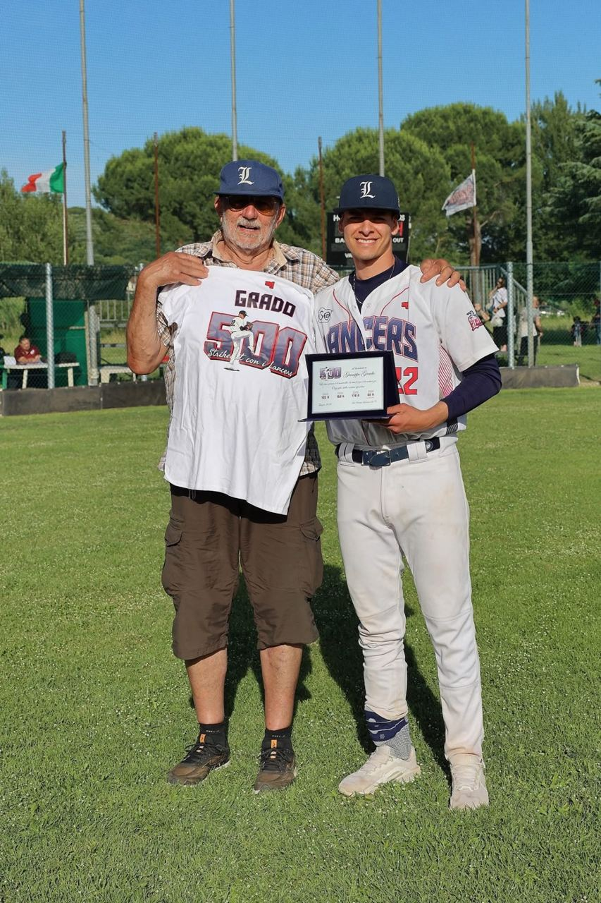
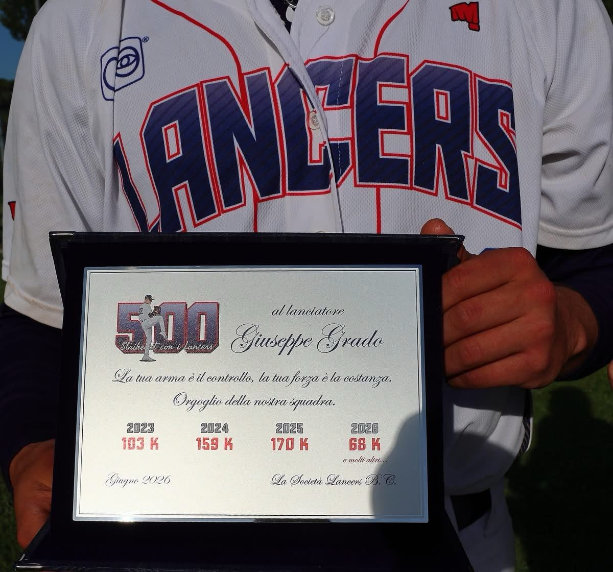

La società Lancers Baseball, nella persona del presidente Paolo Moretti, è felice di congratularsi con il proprio lanciatore Giuseppe Gabriel Grado per aver raggiunto lo straordinario traguardo dei 500 strikeout con la maglia bianco-blu.

Giuseppe è approdato ai Lancers nella stagione 2023, a soli 19 anni, mostrando fin da subito tutte le qualità di un lanciatore destinato a lasciare il segno.
Nella sua prima stagione al Lancers Field ha lanciato 80.2 inning, mettendo a segno 103 strikeout. Le sue prestazioni hanno contribuito in maniera determinante al raggiungimento dei playoff, conquistati anche grazie alle 7 vittorie ottenute nelle 13 partite disputate da partente.
Nel 2024 Grado ha confermato tutte le aspettative. Riducendo sensibilmente il numero di basi ball concesse e aumentando il volume di inning lanciati, ha chiuso la stagione con 104 inning e 159 strikeout. Anche il suo record personale è migliorato, con 9 vittorie in 14 partenze, nonostante la squadra non sia riuscita a centrare l’accesso ai playoff.
Il 2025 rappresenta la definitiva consacrazione del lavoro svolto negli anni precedenti. Una stagione resa ancora più significativa dalla convocazione in Nazionale e dalla capacità di reagire a un grave infortunio. Nel tentativo di raccogliere una palla battuta, infatti, Giuseppe ha riportato la rottura del legamento crociato anteriore, un incidente che avrebbe fermato molti atleti. Non lui.
Con determinazione e spirito di sacrificio, Beppe ha continuato a lavorare duramente per aiutare la squadra e inseguire il sogno della maglia azzurra. Con i Lancers ha chiuso la sua miglior stagione, totalizzando 89 inning lanciati e ben 170 strikeout.
Grazie a queste prestazioni è arrivata la chiamata della selezione Italia U23, prima per la Prague Baseball Week e successivamente per il Campionato Europeo di categoria. In azzurro ha lanciato un inning senza concedere punti, aggiungendo un’altra importante esperienza al proprio percorso sportivo.
Nel frattempo il legame tra Giuseppe e la famiglia Lancers si è consolidato sempre di più, tanto che entrambe le parti hanno scelto di proseguire insieme anche nella stagione 2026.
Nel dicembre 2025 Grado si è sottoposto all’intervento chirurgico necessario per risolvere l’infortunio al legamento crociato anteriore. Nei mesi successivi ha affrontato un intenso percorso di recupero, lavorando instancabilmente insieme al fisioterapista Manuele Margheri, storico ex giocatore dei Lancers, con un unico obiettivo: tornare sul monte di lancio il prima possibile.
Un traguardo che sembrava difficilmente raggiungibile in tempi così brevi, ma che Giuseppe è riuscito a centrare grazie alla sua determinazione e alla professionalità di chi lo ha accompagnato durante la riabilitazione. Incredibilmente, il suo ritorno in campo è arrivato già alla prima giornata del campionato 2026. Pur con un numero limitato di inning a disposizione, il suo rientro ha rappresentato una grande vittoria personale e un segnale importante per tutta la squadra.
Domenica scorsa, nella sfida contro gli Etruscan Fighters, Grado si presentava sul monte a soli tre strikeout dal prestigioso traguardo dei 500. Dopo aver concesso una valida al primo battitore della partita, non si è lasciato condizionare: strikeout ai due battitori successivi e chiusura dell’inning.
Lo strikeout numero 500 è arrivato nel secondo inning. Un momento speciale che ha fermato per qualche istante la partita, con compagni, staff e tifosi pronti a rendere omaggio a un traguardo storico.

Al termine della gara, vinta dai Lancers per 5-4, il General Manager Beconcini e il presidente Moretti hanno premiato Giuseppe con una targa commemorativa e una speciale t-shirt celebrativa realizzata dal pitcher e grafico Daniele Silvestri.
500 strikeout rappresentano un risultato straordinario, frutto di talento, lavoro, sacrificio e passione.
Ancora complimenti, Giuseppe! 💙⚾